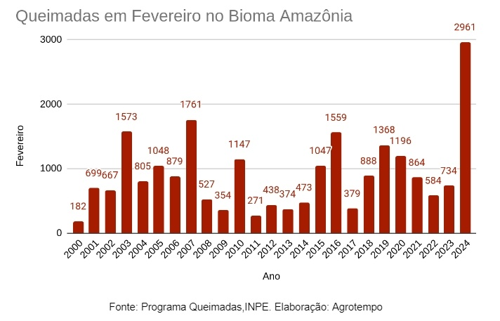

As queimadas trazem sérias consequências para o meio ambiente, causando danos irreparáveis à fauna, flora e à qualidade do ar.
As queimadas têm impactos devastadores no meio ambiente e na sociedade, como:
FAUNA: Os animais que vivem nas áreas afetadas pelas queimadas sofrem diretamente, com muitos morrendo durante o fogo ou devido à destruição de seus habitats. A perda de biodiversidade é significativa, especialmente quando se trata de espécies ameaçadas de extinção.
FLORA: As queimadas destroem vastas áreas de vegetação, incluindo florestas inteiras. As plantas, muitas vezes, não têm tempo de se recuperar antes de uma nova queimada, levando à desertificação e à perda de ecossistemas inteiros.
QUALIDADE DO AR: O fogo libera grandes quantidades de gases tóxicos e partículas na atmosfera, como monóxido de carbono, dióxido de carbono e materiais particulados (PM10 e PM2.5), que podem agravar problemas respiratórios e contribuir para o aquecimento global.

Impactos Sociais e Econômicos:
As queimadas afetam não só o meio ambiente, mas também têm consequências diretas para a sociedade e a economia.
Saúde Pública: A poluição gerada pelas queimadas pode causar graves problemas respiratórios, especialmente em crianças, idosos e pessoas com condições pré-existentes. Asma, bronquite e outras doenças respiratórias se agravam durante períodos de queimadas.
Economia Local: As queimadas prejudicam diretamente a agricultura e pecuária, destruindo plantações, pastagens e áreas de cultivo. Além disso, a recuperação das áreas afetadas exige altos custos, impactando a economia local e o desenvolvimento sustentável da região.
Infraestrutura: Em casos de queimadas urbanas, elas podem afetar as infraestruturas locais, como sistemas de energia e estradas, além de destruir propriedades e criar condições de insegurança para os moradores.